Hokkaido
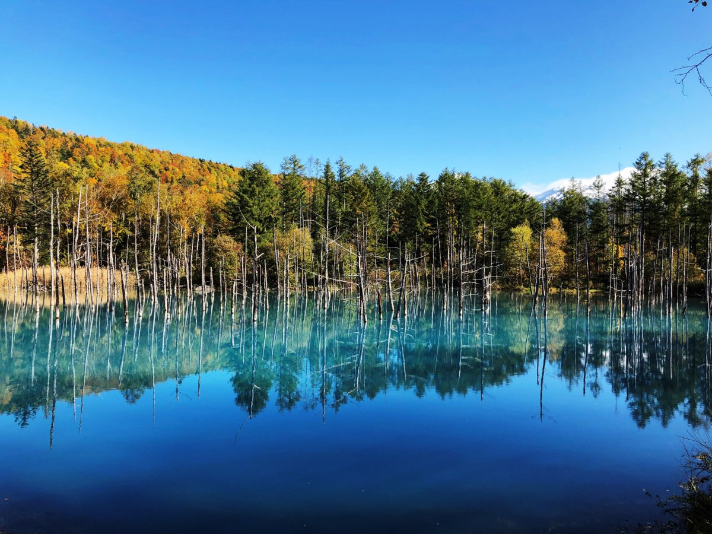
Blue Pond - Famous for its stunning blue waters
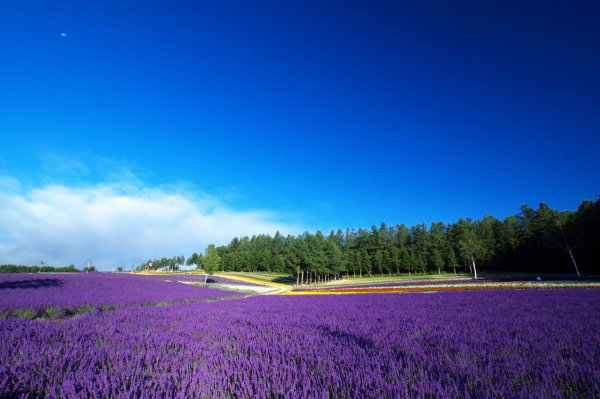
Lavender Fields - Purple paradise in summer
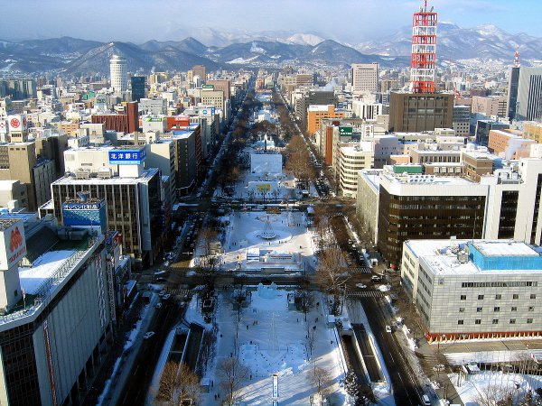
Odori Park - Heart of Sapporo city

Ski Resort - World-class powder snow

Winter Wonderland - Magical snow landscapes
Kyoto

Maiko in Gion - Traditional geisha district

Fushimi Inari - Thousands of red torii gates
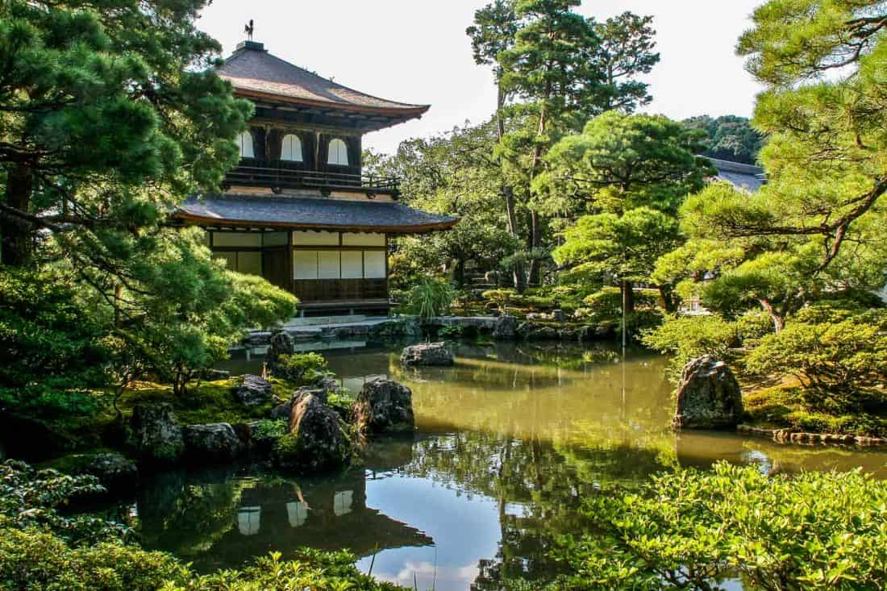
Ginkaku-ji - The Silver Pavilion temple

Yasaka Pagoda - Iconic five-story tower
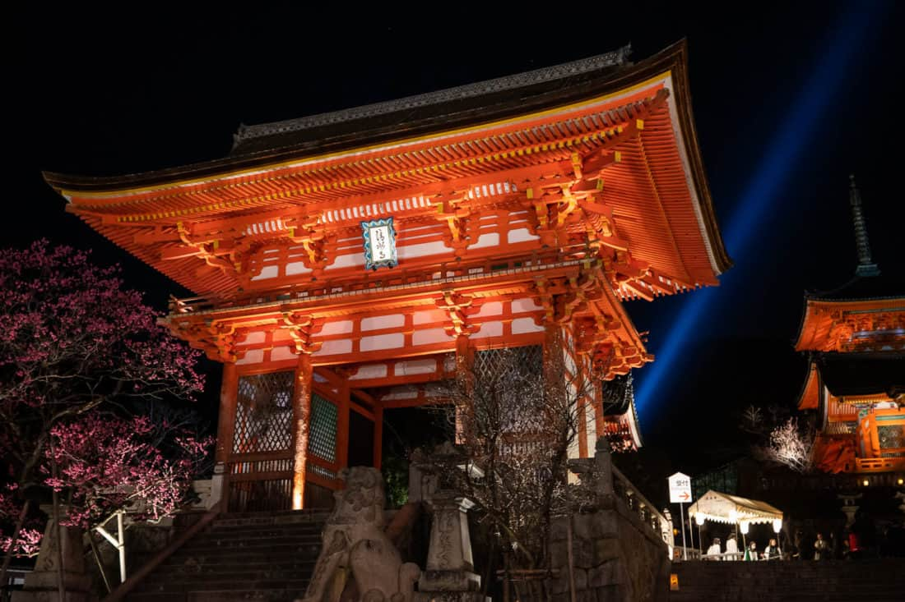
Kiyomizu-dera - UNESCO World Heritage site

Kurama-dera - Mountain temple retreat

Ryoan-ji Garden - Famous zen rock garden

Philosopher's Path - Cherry blossom walkway
Osaka
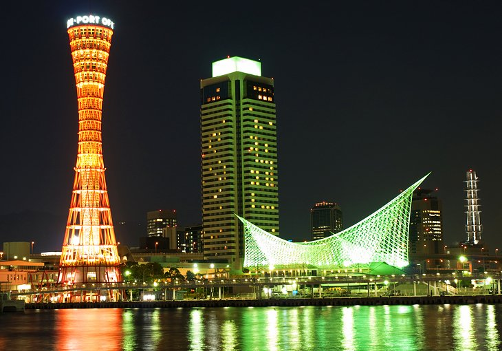
Kobe Port Tower - Iconic red landmark
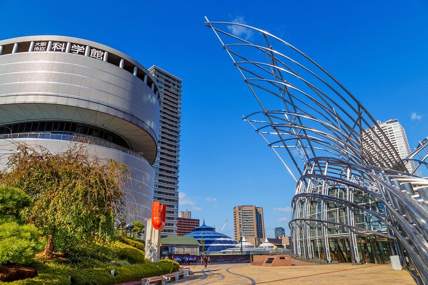
National Museum - Modern art underground
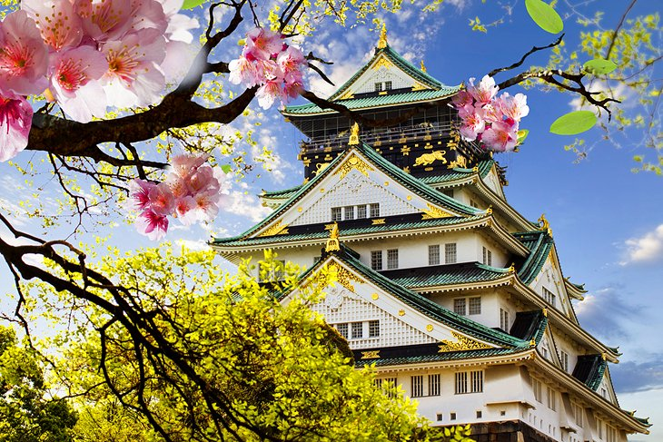
Osaka Castle - Historic fortress in the city
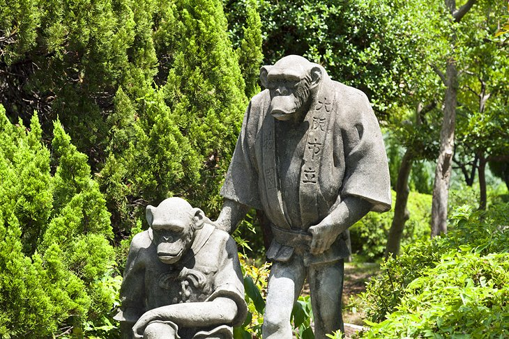
Tennoji Zoo - Family-friendly wildlife park
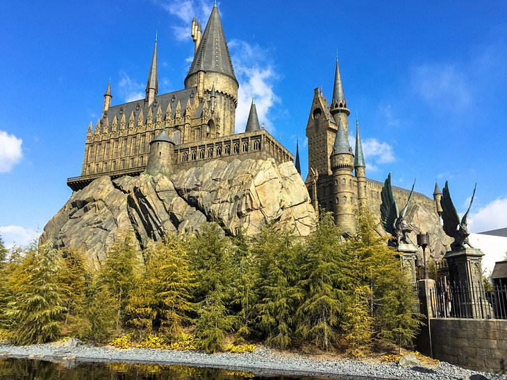
Universal Studios - Thrilling theme park
Yokohama
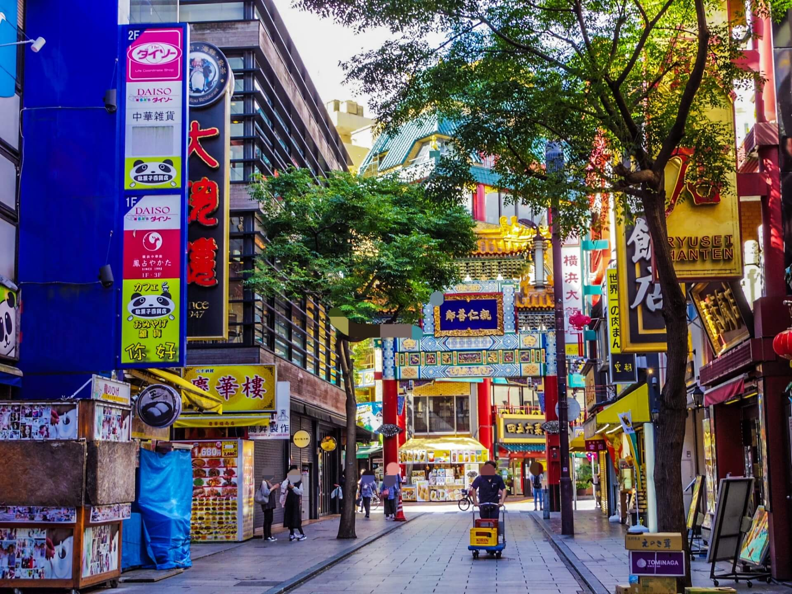
Chinatown - Largest in Japan

Kanteibyo Temple - Chinese Taoist temple

Sankeien Garden - Traditional Japanese landscape

Sky Garden - Panoramic city views